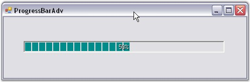

This step-by-step procedure explains how to create the ProgressBarAdv control programmatically.
· Create a C# or VB.NET application in Visual Studio. Switch to the code view.
· Declare and initialize a ProgressBarAdv as below.
|
[C#]
private Syncfusion.Windows.Forms.Tools.ProgressBarAdv progressBarAdv1;
this.progressBarAdv1 = new Syncfusion.Windows.Forms.Tools.ProgressBarAdv(); ((System.ComponentModel.ISupportInitialize)(this.progressBarAdv1)).BeginInit(); this.SuspendLayout(); |
|
[VB.NET]
Friend WithEvents ProgressBarAdv1 As Syncfusion.Windows.Forms.Tools.ProgressBarAdv
Me.ProgressBarAdv1 = New Syncfusion.Windows.Forms.Tools.ProgressBarAdv CType(Me.ProgressBarAdv1, System.ComponentModel.ISupportInitialize).BeginInit() Me.SuspendLayout() |
· Set the Location property of the control.
|
[C#]
this.progressBarAdv1.Location = new System.Drawing.Point(40, 48); |
|
[VB.NET]
Me.ProgressBarAdv1.Location = New System.Drawing.Point(40, 48) |
· Add the control to the form.
|
[C#]
this.Controls.Add(this.progressBarAdv1); this.Text = "ProgressBarAdv"; ((System.ComponentModel.ISupportInitialize)(this.progressBarAdv1)).EndInit(); this.ResumeLayout(false); |
|
[VB.NET]
Me.Controls.Add(Me.ProgressBarAdv1) Me.Text = "ProgressBarAdv" CType(Me.ProgressBarAdv1, System.ComponentModel.ISupportInitialize).EndInit() Me.ResumeLayout(False) |
· Run the application.

Figure 956: ProgressBarAdv created Through Code
See Also
Through Designer, Frequently Asked Questions